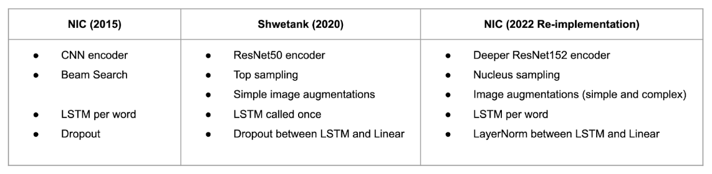

The diagram below presents a high level description of our implementation:
The intersection of vision and natural language processing has been a widely active topic
in the machine learning world in the past 7 years. With the Neural Image Caption (NIC)
technique introduced in 2015, Vinyals and his team were able to achieve state-of-the-art
performance in this image representation task [1]. Although the development of this neural
network architecture was a successful and extraordinary feat, there were still many mislabeled
images shown and discussed in the paper. For the visually impaired, who depend on this type of
technology, incorrect image captions could mislead the actual situation. The question then becomes
whether or not the performance for NIC can be improved.
Our goal is to improve its performance in order to better serve those who need it.
We set out on this task by taking some learnings from the Deep Learning course by Professor David Bau,
ecommendations by the author, and following our own intuition. Over the course of the project,
we built our own NIC from scratch. In doing this, we made some modifications and upgrades to its
existing architecture, the training data, and its evaluation criteria (Figure 1). Our results show
that NIC can be improved significantly and additionally, we identified some methods that can be incorporated
to improve NIC further.
Since Yann Lecun invented convolutional neural networks (CNNs) in 1989 [2], many have adopted deep learning models for processing images. Previously proposed solutions for image captioning tended to stitch together multiple frameworks [3,4]. The significance of the Show and Tell paper lies in its end-to-end system design, which leverages both deep CNNs for image processing and Recurrent Neural Networks (RNNs) for sequence modeling to create a single CNN-RNN network that generates descriptions of images. They were heavily inspired by Cho, et. al. (2014), who pioneered the dual RNN-RNN encoder-decoder structure that achieved state-of-the-art performance in machine translation [5]. This approach allows for image processing and text generation to occur within the same network, in contrast to methods such as the one developed by Li, et. al., which began with detections and pieced together a final description using phrases containing detected objects and relationships [3]. With all of these endeavors to solve a task that is simple for humans but extremely complex for machines to do, we were motivated to dissect the NIC model and discover how we could make additional improvements without completely changing the overall structure.
For our project we chose to build the method for NIC from scratch, and to add a deeper 152-layer Residual Network (ResNet152), a Layer Norm between the Long-Short Term Memory (LSTM) cells, several different image augmentations, and nucleus sampling [12]. We wanted to understand the architect so that we can understand the best way to improve its performance. In total, we compared results for the original NIC paper architect, PyTorch-based NIC architect by Shwetank Panwar [6], and the re-implementation of our own version of NIC (Table 1).
|  |
For augmentations, we chose three approaches that used simple and complex transformations, which are summarized below in Figure 2. We used the Albumentations Python package [7], which boasts fast and flexible image augmentations, to perform these transformations. We selected these functions because we wanted to create diversity within the dataset so that the model could better learn image captioning.
Methods 2 and 3 for image augmentations resulted in suboptimal image captions, but we were able to
generate text descriptive of the input images using Method 1 (Figure 4). As shown in Figure 4 (A),
the captions on both images do not describe the scene at all. We suspected that this is due to the
more complex image augmentations performed on the images for the second and third methods.
[1] Vinyals, Oriol, et al. Show and tell: A neural image caption generator. Proceedings of the IEEE conference on computer vision and pattern recognition, 2015.
[2] LeCun, Y., et al. Backpropagation Applied to Handwritten Zip Code Recognition Neural Computation, vol. 1, no. 4, pp. 541-551, Dec. 1989
[3] S. Li, G. Kulkarni, T. L. Berg, A. C. Berg, and Y. Choi. Composing simple image descriptions using web-scale n-grams In Conference on Computational Natural Language Learning, 2011.
[4] A. Farhadi, M. Hejrati, M. A. Sadeghi, P. Young, C. Rashtchian, J. Hockenmaier, and D. Forsyth. Every picture tells a story: Generating sentences from images. In ECCV, 2010.
[5] K. Cho, B. van Merrienboer, C. Gulcehre, F. Bougares, H. Schwenk, and Y. Bengio.Learning phrase representations using RNN encoder-decoder for statistical machine translation. In EMNLP, 2014.
[6] Panwar, Shwetank. NIC-2015-Pytorch Github repository, 2019
[7] Buslaev, Alexander and Iglovikov, Vladimir I. and Khvedchenya, Eugene and Parinov, Alex and Druzhinin, Mikhail and Kalinin, Alexandr A.Albumentations: Fast and Flexible Image Augmentations Information, vol. 11, no. 2, article 125, 2020
[8] Holtzman, Ari, et al.The curious case of neural text degeneration. arXiv preprint. arXiv:1904.09751, 2019.
[9] Mann, BenHow to sample from language models. Online article, 2019
[10] Zongjian, Z., Qiang, W., Yang, W., Fang, C.Exploring region relationships implicitly: image captioning with visual relationship attention. Image Vis. Comput. 109, 104146, 2021.
[11] Su, J., Tang, J., Lu, Z., Han, X., Zhang, H A neural image captioning model with caption-to-images semantic constructor. Neurocomputing 367, 2019.
[12] LabMLAI Annotated deep learning paper implementations Github repository, 2022